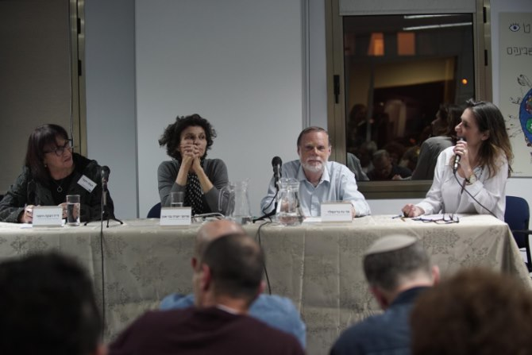

לבקשת משרד החינוך ומכללת אורנים עסקו 19 עמיתי מחזור כ"ד במשך שלושה שבועות בלימוד על המכללות להכשרת מורים ועל תהליך הכשרת המורים בישראל – זאת לאחר שינויים רבים שחלו בתחום לאורך השנים, ובפרט לאחר ההחלטה להעביר את המכללות להוראה לתקצוב הות"ת וההחלטה על הקמת ועדה חדשה בחסות המל"ג המבקשת לפתוח את מתווה אריאב לדיון מחודש. שתי החלטות אלו היו הזדמנות להבין כיצד יכולות מכללות החינוך לסייע בשיפור החינוך בישראל. לבקשת נשיאת המכללה האקדמית לחינוך אורנים, פרופ' יערה בר און, הוגדרה המכללה כמקרה בוחן אשר נועד לאפשר בחינה של תהליכים: הן כאלה המתרחשים בתוך המכללה פנימה, והן עם שחקנים נוספים בשדה.
בתרגיל הציגו העמיתים תמונה רחבה של תחום הכשרת המורים והתמקדו במכללות האקדמיות לחינוך: בחנו גישות בהכשרת מורים, סקרו דגמים להכשרה בארץ ובעולם, ניתחו את התפתחות הכשרת המורים בישראל ובחנו סוגיות מרכזיות בתחום – שונוּת בתפיסה הפרופסיונלית, זהות מקצועית ופיתוח חזון חינוכי.
העמיתים הציגו שלוש תובנות מרכזיות לפעולה, הנגזרות מן התפיסה שהמכללות האקדמיות לחינוך הן הגופים האמונים על חיזוקו של מקצוע ההוראה כפרופסיה.
התובנה הראשונה, המיועדת בעיקר למכללות האקדמיות לחינוך, היא שיש להעצים את מישור הזהות בפיתוח דמות המורה.
התובנה השנייה מיועדת למקבלי ההחלטות במל"ג ובמשרד החינוך, ומבקשת לחזק את הקשר שבין הפונקציות השונות בעולם הכשרת המורים, באמצעות פיתוח מנגנונים למיזוגים ולשותפויות.
התובנה השלישית היא שעל המל"ג להגביר את מעורבותה בתהליך האיחוד של המכללות ולהעמיד גוף מומחים שילווה תהליך זה.

באירוע, שנערך ב-26 במרס בבית ספר מנדל למנהיגות חינוכית, הוצגו עיקרי התרגיל, ולאחר מכן הגיבו עליו שלושה אנשי מקצוע מתחום הכשרת המורים בישראל: מר נוח גרינפלד, מנהל האגף להכשרת עובדי הוראה במשרד החינוך; ד"ר רבקה ודמני, מכללת סמינר הקיבוצים, חברת ות"ת והמועצה להשכלה גבוהה, ופרופ' יערה בר און, נשיאת המכללה האקדמית לחינוך "אורנים". המגיבים התבקשו להתייחס לשאלה מה התרחיש הטוב ביותר עבור המכללות לחינוך עם מעברן לות"ת, ומה התרחיש הרע ביותר.
"בגן העדן שלי, המכללות לחינוך עושות את מה שהן יודעות לעשות הכי טוב: הכשרה דיסציפלינרית ברמה של ב"א, עם אפשרות להמשיך לתואר שני, אבל לא מיד, כדי לאפשר לסטודנטים להסיק מסקנות מן השדה ולחזור ללמידה. במהלך אותן 4 שנים הם עושים תעודת הוראה, בצורה המיטבית, עם הרבה מאוד עבודה בשטח" אמרה פרופ' בר און. "אחרי שסטודנטים מסיימים ארבע שנים כאלה, יש להם עמוד שדרה חינוכי".
ד"ר רבקה ודמני תיארה תרחיש עתידי חיובי הכולל איחוד של מכללות, הקטנת מספרן וחיזוקן: "מכללות אלו מרוצות מאיחודן וסבורות שהאיחוד ביניהם והמעבר לות"ת חיזק אותן מהפן האקדמי, המנהלי והפיננסי, שדרג את מעמד הפרופסיה והפך אותן למעצמה חינוכית המכשירה מורים באופן מיטבי", אמרה.
נוח גרינפלד תיאר את התרחיש הרצוי בעיניו: "נפרדנו מהתואר הראשון, ה-B.Ed, הכולל הכשרה אקדמית לצד הכשרה פרוסיונלית, דבר שיצר מתח רב... צריך קודם הכשרה דיסציפלינרית ואחר כך הכשרה פרופסיונלית מלאה, עם זמן מלא, בלי מתח, ועם השקעה רבה", אמר.

דני בר גיורא, מנהל בית ספר מנדל למנהיגות חינוכית התייחס לתוצר התרגיל: "הבחירה שלכם להתבונן במכללות החינוך הן דרך שאלות של ניהול, שינוי ומבנה והן דרך שאלות של זהות חינוכית ותפקיד המורה המחנך, החיבור בין חזון למעשה, מעידה על היותכם קבוצה של אנשי חינוך המחויבים לחינוך... חיבור זה שבין זהות האדם המחנך ובין שאלות של מבנים ותהליכים הוא הרי כמעט כל התורה המנדלית על רגל אחת", אמר לעמיתים..
משה ויגדור, מנכ"ל קרן מנדל-ישראל ולשעבר מנכ"ל המל"ג, תיאר נקודות ציון חשובות בתהליך השינוי שעברו המכללות להכשרת מורים ובירך את העמיתים על התרגיל ועל התוצר: "העמיתים הפתיעו ביכולתם לחדור בתקופה כל כך קצרה ולחוצה למורכבויות של המערכת ולהאיר בצורה ברורה את סוגיות היסוד".
בית ספר מנדל למנהיגות חינוכית רואה בתרגיל הקבוצתי, הנערך מדי שנה, הזדמנות להתגייס לסיוע בחשיבה על פתרון בעיה הנמצאת על סדר היום במערכת החינוך בישראל. התרגיל מבטא את עמדת בית הספר, שכדי להוליך שינוי משמעותי בעולם יש להתהלך בגשר שבין עולמם של אנשי התיאוריה לבין עולמם של אנשי המעשה.
{kind=link}